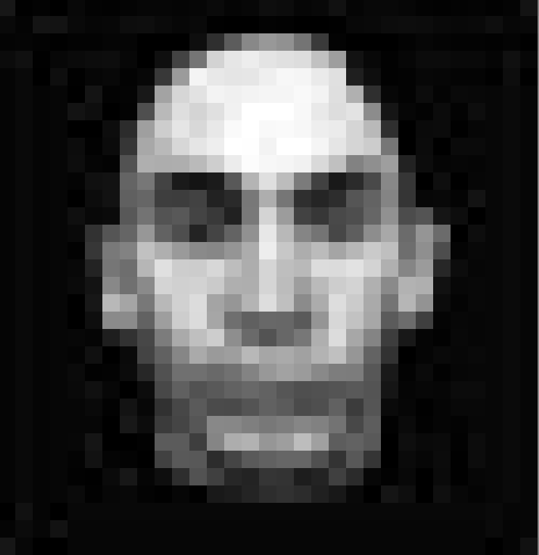

Even though technology is rapidly improving, many visual surveillance systems are equipped with subpar cameras that can not be replaced due to a variety of reasons. Handling the low-resolution images that these equipment capture is of the utmost importance and is a common problem in many fields, such as medicine, astronomy, and meteorology. Because scientists can not analyze this data directly because of its poor resolution, a great deal of research and thought have been put into how to estimate or synthesize high-resolution images from either a single or series of low-resolution images. With these estimated high-resolution images, scientists will be able to extract much more information than possible with their original data. In this project, we will completely reimplement Park et. Al's paper by using an example based, object-class-specific, and top-down method to build a model which takes low-resolution facial images as input and outputs enhanced high-resolution facial images. Furthermore, we will extend their model to another similar dataset.

In the pictures above, we wish to take the low-resolution image to the far left and estimate a high-resolution image for it. Our high-resolution estimate is the second to the right, while the ground truth is to the far right.
The model will estimate and learn high-resolution shapes and textures from the original images by using learning and optimization techniques. Then, the images will be reconstructed using the shape and texture information extracted from their low-resolution counterparts. Afterwards, recursive back-projection approach will be used to enhance the quality of the estimated parameters. Lastly, we will synthesize the high-resolution images by warping the texture with the shape information and determine the error between the estimated high-resolution image and the low-resolution training image. Once the model is completed and tested on the MPI Face Database, we will train the model on a different dataset to test its applicability.
We will train the model using the MPI Face Database as per the original paper. This dataset is composed of 3D RGB models of 100 female and male faces of different ages and ethnicities recorded by a laser scanner. We will then additional test the resiliency of the model on another similar dataset.